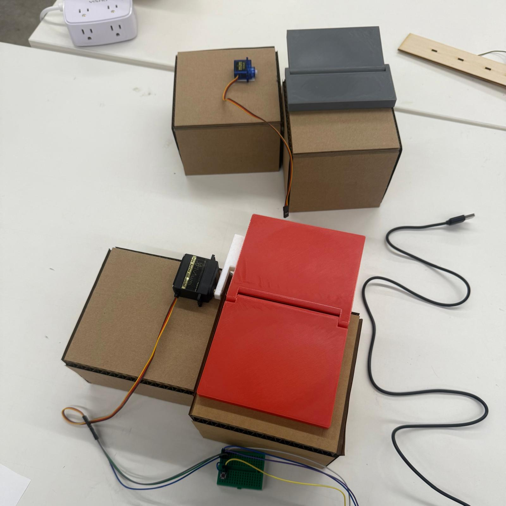
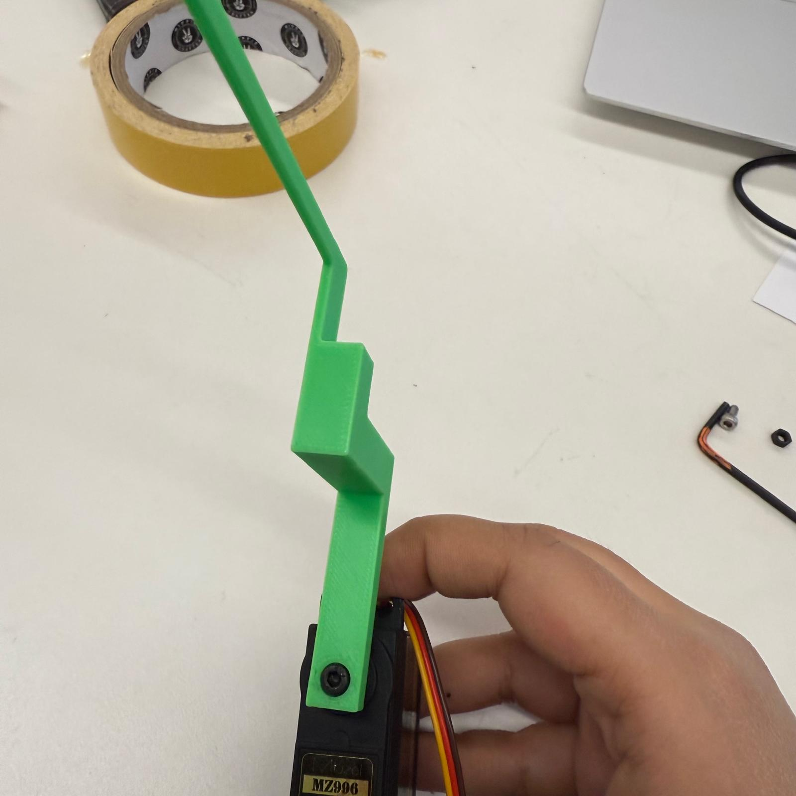
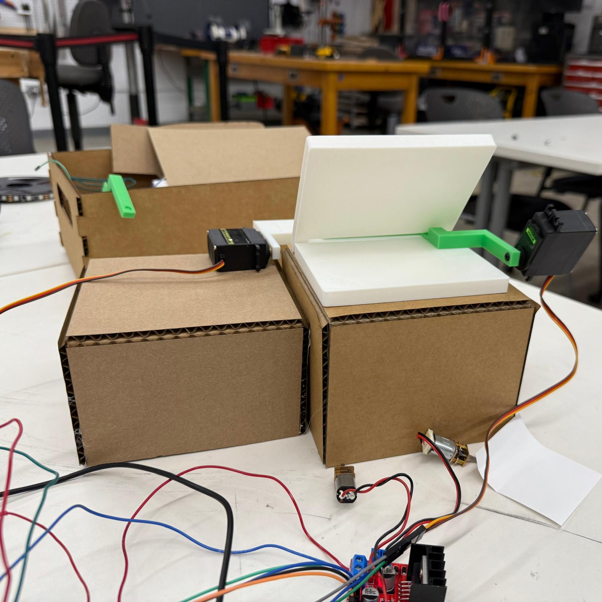
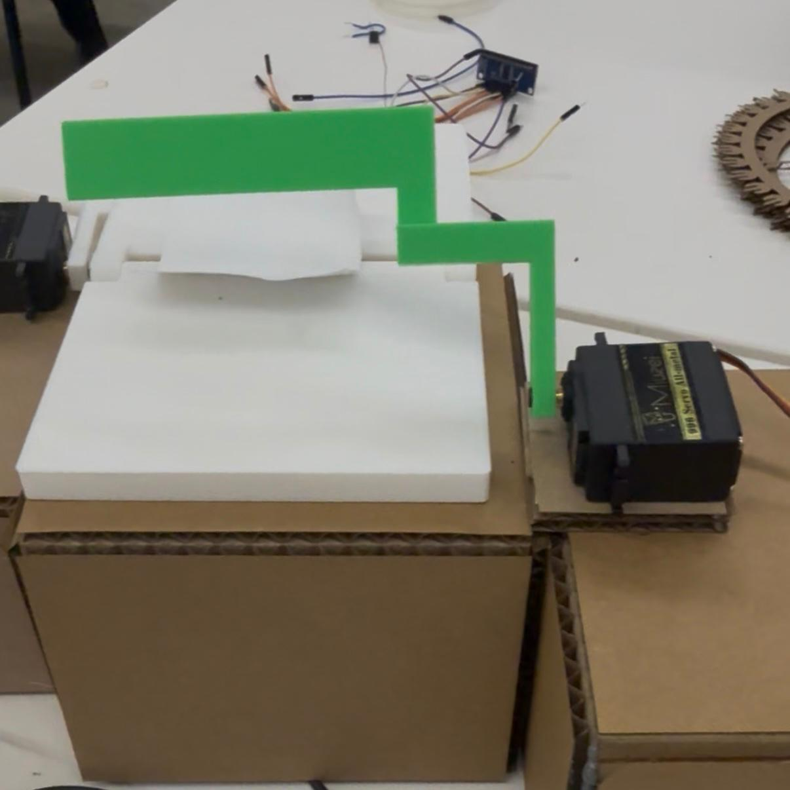
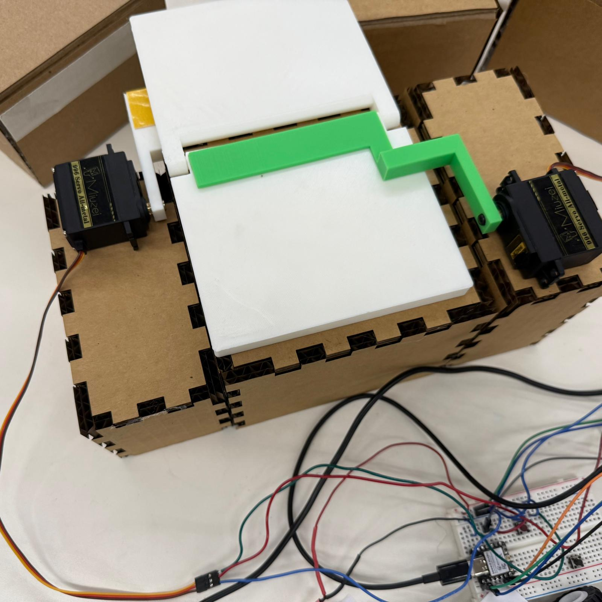
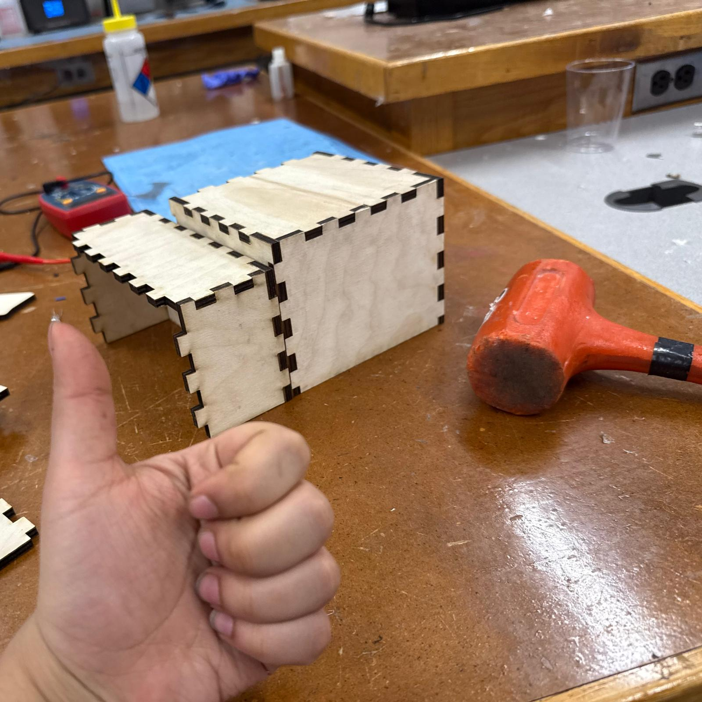
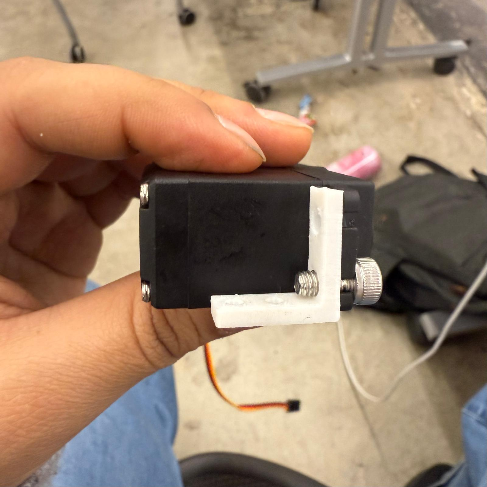
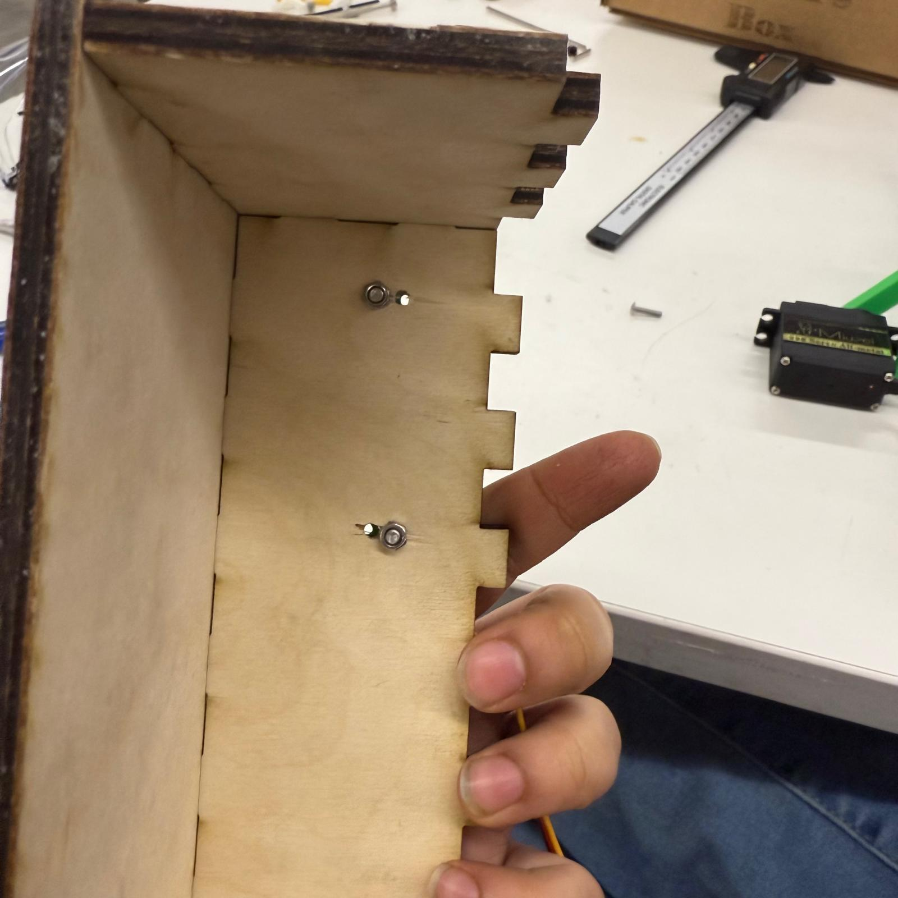
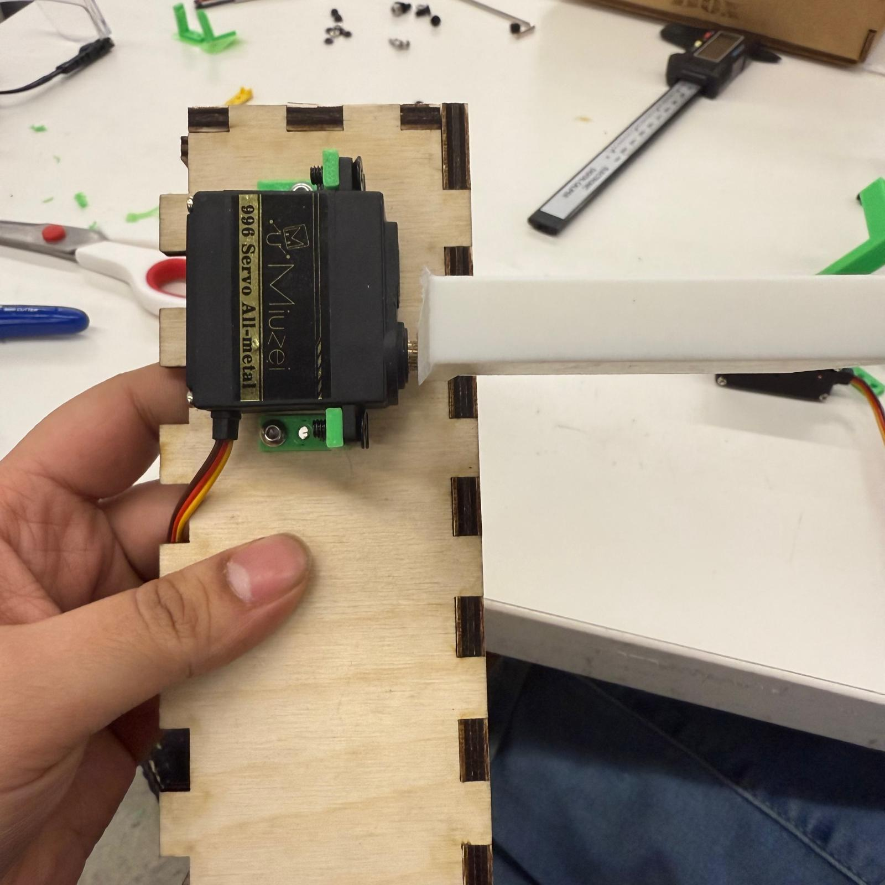

Purpose of the project
My final project aimed to automate the process of folding origami. I started with simple 2D folds because basic creases and grid folds form the foundation for more complex origami structures.
The goal was to build a machine that could create one clean, consistent fold automatically. It sounded simple, just one fold, but I quickly realized that even this single action involves a surprising amount of mechanical and design complexity.
The paper had to stay aligned, the hinge had to rotate smoothly, the servo needed enough torque, and the structure had to stay stable while the fold happened.
From MVP to final project
My MVP showed that a servo-driven hinge could make a basic fold, but it also revealed the main issues I needed to solve. The hinge was too weak, the servo did not have enough torque, the paper had to be taped down manually, and the whole structure shifted while folding.
For the final version, I redesigned the hinge, used a stronger servo, added a second servo to hold the paper down, and rebuilt the structure using finger-joint plywood boxes instead of cardboard. The goal was to make the system more stable, more repeatable, and closer to being semi-autonomous.
The earlier prototype is documented here .
Better hinge design
I redesigned the hinge to increase wall thickness, improve tolerances, and prevent cracking. The hinge had to be strong enough to handle repeated folding, but still smooth enough to rotate cleanly.
Stronger servo and screw attachment
I upgraded to a stronger servo and switched to a screw-mounted arm. This made the connection more secure than press-fitting or taping parts together, and gave the folding mechanism more reliable motion.

Thread linkage and holding mechanism
One issue with the first prototype was that I had to tape the paper onto the hinge before every fold. That made the system feel much less autonomous. To fix this, I designed a holding arm mechanism for a second servo and shifted to a hinge with a larger gap so the mechanism could sit between the hinge and the folding surface.


I later upgraded to a wider holding mechanism so it could press down on the paper more evenly.

I also attached a thread between the folding servo arm and the hinge. This helped bring the hinge back down after each fold.
Paper choice
Thick paper did not fold well because the folding arm was open on one end. Normal printer paper worked much better because it creased more easily and needed less force.
Electronics and code
I switched from an ESP32 to a Xiao board after my ESP32 stopped working, which also gave me more soldering practice. I controlled two servos: one for holding the paper and one for folding it.
#include <ESP32Servo.h>
Servo myservofold;
Servo myservohold;
int Fpos = 0;
int Hpos = 120;
int ButtonPinFold = D7;
int ServoPinFold = D8;
int ServoPinHold = D9;
void setup() {
myservofold.attach(ServoPinFold);
myservofold.write(Fpos);
myservohold.attach(ServoPinHold);
myservohold.write(Hpos);
pinMode(ButtonPinFold, INPUT_PULLUP);
Serial.begin(9600);
}
void loop() {
int ButtonStateFold = digitalRead(ButtonPinFold);
Serial.println(ButtonStateFold);
if (ButtonStateFold == LOW) {
myservohold.write(175);
delay(1000);
myservofold.write(118);
delay(1000);
myservohold.write(175);
delay(1000);
myservofold.write(118);
delay(1000);
myservofold.write(0);
delay(1000);
myservohold.write(120);
delay(1000);
}
}Moving from cardboard to plywood
Cardboard was not strong enough, and the motors kept moving because they were only secured with double-sided tape. I switched to finger-joint plywood boxes for a more stable structure. I prototyped the measurements in cardboard first, then laser-cut the final boxes from 6 mm plywood.
The 0.18 mm kerf made the finger joints tight enough to hammer-fit without wood glue, which was very satisfying.


Motor mounts and L-joints
I measured the motor dimensions and designed L-joints to hold the motors down more securely. I also drilled through the plywood so screws could mount the motors instead of relying on tape.



After sanding the plywood edges, I attached the boxes together and taped the hinge onto the surface.

Switch mount and base
I soldered a switch and 3D printed a small mount so it could be pressed from the front. I then attached the whole mechanism onto a plywood base for stability.
Final demo
Presentation video
Here is my full presentation video for the final project.

Further work
- Reduce the hinge gap for sharper folds.
- Thin the holding mechanism while keeping it stable.
- Add a tiny motorized roller to advance the paper.
- Explore multiple sequential folds.
What I took from it
This was my first time building a complete mechanical-electronic system from scratch. I learned how long even simple tasks can take, especially when mechanics, electronics, code, and fabrication all have to work together.
I spent a lot of time in the makerspace working on this project, and I’m proud of how it turned out. It made me much more comfortable with iteration, debugging, soldering, laser cutting, 3D printing, and designing around real physical constraints.